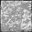
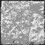

<head>
<!-- -->
<Scene>
</X3D>
<meta name='title' content='Floor.x3d'/>
<meta name='description' content='Mesh floor: this file creates a large flat floor. Nothing special except its use... When lighting is computed for a face, it is typically computed only at the four corners of each face. The brightness at the center of the face is then computed by interpolating the brightnesses from the corners.'/>
<meta name='creator' content='David R. Nadeau'/>
<meta name='translator' content='Don Brutzman'/>
<meta name='created' content='1 July 1998'/>
<meta name='translated' content='2 February 2014'/>
<meta name='modified' content='20 October 2019'/>
<meta name='reference' content='Monolith.x3d'/>
<meta name='reference' content='originals/floor.wrl'/>
<meta name='reference' content=' http://www.siggraph.org/s98 '/>
<meta name='reference' content=' http://www.siggraph.org/s98/conference/courses/18.html '/>
<meta name='reference' content=' http://www.sdsc.edu/~moreland/courses/Siggraph98/vrml97/slides/mt0145.htm '/>
<meta name='reference' content=' http://www.sdsc.edu/~moreland/courses/Siggraph98/vrml97/vrml97.htm '/>
<meta name='reference' content=' https://www.web3d.org/x3d/content/examples/X3dResources.html '/>
<meta name='identifier' content=' https://www.web3d.org/x3d/content/examples/Vrml2Sourcebook/Siggraph98Course/Floor.x3d '/>
<meta name='generator' content='Vrml97ToX3dNist, http://ovrt.nist.gov/v2_x3d.html'/>
<meta name='generator' content='X3D-Edit, https://savage.nps.edu/X3D-Edit'/>
<meta name='license' content=' ../license.html'/>
</head>
<meta name='description' content='Mesh floor: this file creates a large flat floor. Nothing special except its use... When lighting is computed for a face, it is typically computed only at the four corners of each face. The brightness at the center of the face is then computed by interpolating the brightnesses from the corners.'/>
<meta name='creator' content='David R. Nadeau'/>
<meta name='translator' content='Don Brutzman'/>
<meta name='created' content='1 July 1998'/>
<meta name='translated' content='2 February 2014'/>
<meta name='modified' content='20 October 2019'/>
<meta name='reference' content='Monolith.x3d'/>
<meta name='reference' content='originals/floor.wrl'/>
<meta name='reference' content=' http://www.siggraph.org/s98 '/>
<meta name='reference' content=' http://www.siggraph.org/s98/conference/courses/18.html '/>
<meta name='reference' content=' http://www.sdsc.edu/~moreland/courses/Siggraph98/vrml97/slides/mt0145.htm '/>
<meta name='reference' content=' http://www.sdsc.edu/~moreland/courses/Siggraph98/vrml97/vrml97.htm '/>
<meta name='reference' content=' https://www.web3d.org/x3d/content/examples/X3dResources.html '/>
<meta name='identifier' content=' https://www.web3d.org/x3d/content/examples/Vrml2Sourcebook/Siggraph98Course/Floor.x3d '/>
<meta name='generator' content='Vrml97ToX3dNist, http://ovrt.nist.gov/v2_x3d.html'/>
<meta name='generator' content='X3D-Edit, https://savage.nps.edu/X3D-Edit'/>
<meta name='license' content=' ../license.html'/>
<!-- -->
<Scene>
<!-- Where this is important is in floors (and walls). If you create a floor using one large face (or the top of a Box node), then put a point light at the middle of the floor, the floor's corners will all be equi-distant from the light, and thus will have the same, rather dim brightness. When this brightness is interpolated across the face of the floor, you'll get a constant dim brightness... even directly underneath the point light! -->
<!-- To fix this, use a mesh (face set) with lots of smaller faces. Now, each face still has brightness computed for its four corners. However, the small faces near the center of the floor and the point light get higher brightness values computed than those more distant. This will give you a brightening effect under the point light, and a gradual dimming towards the edges of the floor. This is much more realistic! -->
<!-- The disadvantage is the increase in the number of faces in your scene. This can be a performance problem on some VRML browsers. -->
<WorldInfo title='Floor.x3d'/>
<Viewpoint description='View of floor' orientation='1 0 0 -0.197396' position='0 2 10'/>
<Shape>
</Scene>
<!-- To fix this, use a mesh (face set) with lots of smaller faces. Now, each face still has brightness computed for its four corners. However, the small faces near the center of the floor and the point light get higher brightness values computed than those more distant. This will give you a brightening effect under the point light, and a gradual dimming towards the edges of the floor. This is much more realistic! -->
<!-- The disadvantage is the increase in the number of faces in your scene. This can be a performance problem on some VRML browsers. -->
<WorldInfo title='Floor.x3d'/>
<Viewpoint description='View of floor' orientation='1 0 0 -0.197396' position='0 2 10'/>
{kind=link}
<Shape>
<Appearance>
<IndexedFaceSet coordIndex='0 1 12 11 -1 1 2 13 12 -1 2 3 14 13 -1 3 4 15 14 -1 4 5 16 15 -1 5 6 17 16 -1 6 7 18 17 -1 7 8 19 18 -1 8 9 20 19 -1 9 10 21 20 -1 11 12 23 22 -1 12 13 24 23 -1 13 14 25 24 -1 14 15 26 25 -1 15 16 27 26 -1 16 17 28 27 -1 17 18 29 28 -1 18 19 30 29 -1 19 20 31 30 -1 20 21 32 31 -1 22 23 34 33 -1 23 24 35 34 -1 24 25 36 35 -1 25 26 37 36 -1 26 27 38 37 -1 27 28 39 38 -1 28 29 40 39 -1 29 30 41 40 -1 30 31 42 41 -1 31 32 43 42 -1 33 34 45 44 -1 34 35 46 45 -1 35 36 47 46 -1 36 37 48 47 -1 37 38 49 48 -1 38 39 50 49 -1 39 40 51 50 -1 40 41 52 51 -1 41 42 53 52 -1 42 43 54 53 -1 44 45 56 55 -1 45 46 57 56 -1 46 47 58 57 -1 47 48 59 58 -1 48 49 60 59 -1 49 50 61 60 -1 50 51 62 61 -1 51 52 63 62 -1 52 53 64 63 -1 53 54 65 64 -1 55 56 67 66 -1 56 57 68 67 -1 57 58 69 68 -1 58 59 70 69 -1 59 60 71 70 -1 60 61 72 71 -1 61 62 73 72 -1 62 63 74 73 -1 63 64 75 74 -1 64 65 76 75 -1 66 67 78 77 -1 67 68 79 78 -1 68 69 80 79 -1 69 70 81 80 -1 70 71 82 81 -1 71 72 83 82 -1 72 73 84 83 -1 73 74 85 84 -1 74 75 86 85 -1 75 76 87 86 -1 77 78 89 88 -1 78 79 90 89 -1 79 80 91 90 -1 80 81 92 91 -1 81 82 93 92 -1 82 83 94 93 -1 83 84 95 94 -1 84 85 96 95 -1 85 86 97 96 -1 86 87 98 97 -1 88 89 100 99 -1 89 90 101 100 -1 90 91 102 101 -1 91 92 103 102 -1 92 93 104 103 -1 93 94 105 104 -1 94 95 106 105 -1 95 96 107 106 -1 96 97 108 107 -1 97 98 109 108 -1 99 100 111 110 -1 100 101 112 111 -1 101 102 113 112 -1 102 103 114 113 -1 103 104 115 114 -1 104 105 116 115 -1 105 106 117 116 -1 106 107 118 117 -1 107 108 119 118 -1 108 109 120 119 -1'>
</Shape>
<TextureTransform scale='20.0 20.0'/>
<Material ambientIntensity='0.1'/>
<ImageTexture
url=' "stone2.jpg " "https://www.web3d.org/x3d/content/examples/Vrml2Sourcebook/Siggraph98Course/stone2.jpg " '
/>
" '
/>
</Appearance>
<Material ambientIntensity='0.1'/>
<ImageTexture
url=' "stone2.jpg " "https://www.web3d.org/x3d/content/examples/Vrml2Sourcebook/Siggraph98Course/stone2.jpg
" '
/>
<IndexedFaceSet coordIndex='0 1 12 11 -1 1 2 13 12 -1 2 3 14 13 -1 3 4 15 14 -1 4 5 16 15 -1 5 6 17 16 -1 6 7 18 17 -1 7 8 19 18 -1 8 9 20 19 -1 9 10 21 20 -1 11 12 23 22 -1 12 13 24 23 -1 13 14 25 24 -1 14 15 26 25 -1 15 16 27 26 -1 16 17 28 27 -1 17 18 29 28 -1 18 19 30 29 -1 19 20 31 30 -1 20 21 32 31 -1 22 23 34 33 -1 23 24 35 34 -1 24 25 36 35 -1 25 26 37 36 -1 26 27 38 37 -1 27 28 39 38 -1 28 29 40 39 -1 29 30 41 40 -1 30 31 42 41 -1 31 32 43 42 -1 33 34 45 44 -1 34 35 46 45 -1 35 36 47 46 -1 36 37 48 47 -1 37 38 49 48 -1 38 39 50 49 -1 39 40 51 50 -1 40 41 52 51 -1 41 42 53 52 -1 42 43 54 53 -1 44 45 56 55 -1 45 46 57 56 -1 46 47 58 57 -1 47 48 59 58 -1 48 49 60 59 -1 49 50 61 60 -1 50 51 62 61 -1 51 52 63 62 -1 52 53 64 63 -1 53 54 65 64 -1 55 56 67 66 -1 56 57 68 67 -1 57 58 69 68 -1 58 59 70 69 -1 59 60 71 70 -1 60 61 72 71 -1 61 62 73 72 -1 62 63 74 73 -1 63 64 75 74 -1 64 65 76 75 -1 66 67 78 77 -1 67 68 79 78 -1 68 69 80 79 -1 69 70 81 80 -1 70 71 82 81 -1 71 72 83 82 -1 72 73 84 83 -1 73 74 85 84 -1 74 75 86 85 -1 75 76 87 86 -1 77 78 89 88 -1 78 79 90 89 -1 79 80 91 90 -1 80 81 92 91 -1 81 82 93 92 -1 82 83 94 93 -1 83 84 95 94 -1 84 85 96 95 -1 85 86 97 96 -1 86 87 98 97 -1 88 89 100 99 -1 89 90 101 100 -1 90 91 102 101 -1 91 92 103 102 -1 92 93 104 103 -1 93 94 105 104 -1 94 95 106 105 -1 95 96 107 106 -1 96 97 108 107 -1 97 98 109 108 -1 99 100 111 110 -1 100 101 112 111 -1 101 102 113 112 -1 102 103 114 113 -1 103 104 115 114 -1 104 105 116 115 -1 105 106 117 116 -1 106 107 118 117 -1 107 108 119 118 -1 108 109 120 119 -1'>
<Coordinate point='-10.0 0.0 10.0 -8.0 0.0 10.0 -6.0 0.0 10.0 -4.0 0.0 10.0 -2.0 0.0 10.0 0.0 0.0 10.0 2.0 0.0 10.0 4.0 0.0 10.0 6.0 0.0 10.0 8.0 0.0 10.0 10.0 0.0 10.0 -10.0 0.0 8.0 -8.0 0.0 8.0 -6.0 0.0 8.0 -4.0 0.0 8.0 -2.0 0.0 8.0 0.0 0.0 8.0 2.0 0.0 8.0 4.0 0.0 8.0 6.0 0.0 8.0 8.0 0.0 8.0 10.0 0.0 8.0 -10.0 0.0 6.0 -8.0 0.0 6.0 -6.0 0.0 6.0 -4.0 0.0 6.0 -2.0 0.0 6.0 0.0 0.0 6.0 2.0 0.0 6.0 4.0 0.0 6.0 6.0 0.0 6.0 8.0 0.0 6.0 10.0 0.0 6.0 -10.0 0.0 4.0 -8.0 0.0 4.0 -6.0 0.0 4.0 -4.0 0.0 4.0 -2.0 0.0 4.0 0.0 0.0 4.0 2.0 0.0 4.0 4.0 0.0 4.0 6.0 0.0 4.0 8.0 0.0 4.0 10.0 0.0 4.0 -10.0 0.0 2.0 -8.0 0.0 2.0 -6.0 0.0 2.0 -4.0 0.0 2.0 -2.0 0.0 2.0 0.0 0.0 2.0 2.0 0.0 2.0 4.0 0.0 2.0 6.0 0.0 2.0 8.0 0.0 2.0 10.0 0.0 2.0 -10.0 0.0 0.0 -8.0 0.0 0.0 -6.0 0.0 0.0 -4.0 0.0 0.0 -2.0 0.0 0.0 0.0 0.0 0.0 2.0 0.0 0.0 4.0 0.0 0.0 6.0 0.0 0.0 8.0 0.0 0.0 10.0 0.0 0.0 -10.0 0.0 -2.0 -8.0 0.0 -2.0 -6.0 0.0 -2.0 -4.0 0.0 -2.0 -2.0 0.0 -2.0 0.0 0.0 -2.0 2.0 0.0 -2.0 4.0 0.0 -2.0 6.0 0.0 -2.0 8.0 0.0 -2.0 10.0 0.0 -2.0 -10.0 0.0 -4.0 -8.0 0.0 -4.0 -6.0 0.0 -4.0 -4.0 0.0 -4.0 -2.0 0.0 -4.0 0.0 0.0 -4.0 2.0 0.0 -4.0 4.0 0.0 -4.0 6.0 0.0 -4.0 8.0 0.0 -4.0 10.0 0.0 -4.0 -10.0 0.0 -6.0 -8.0 0.0 -6.0 -6.0 0.0 -6.0 -4.0 0.0 -6.0 -2.0 0.0 -6.0 0.0 0.0 -6.0 2.0 0.0 -6.0 4.0 0.0 -6.0 6.0 0.0 -6.0 8.0 0.0 -6.0 10.0 0.0 -6.0 -10.0 0.0 -8.0 -8.0 0.0 -8.0 -6.0 0.0 -8.0 -4.0 0.0 -8.0 -2.0 0.0 -8.0 0.0 0.0 -8.0 2.0 0.0 -8.0 4.0 0.0 -8.0 6.0 0.0 -8.0 8.0 0.0 -8.0 10.0 0.0 -8.0 -10.0 0.0 -10.0 -8.0 0.0 -10.0 -6.0 0.0 -10.0 -4.0 0.0 -10.0 -2.0 0.0 -10.0 0.0 0.0 -10.0 2.0 0.0 -10.0 4.0 0.0 -10.0 6.0 0.0 -10.0 8.0 0.0 -10.0 10.0 0.0 -10.0'/>
</IndexedFaceSet>
<!-- -->